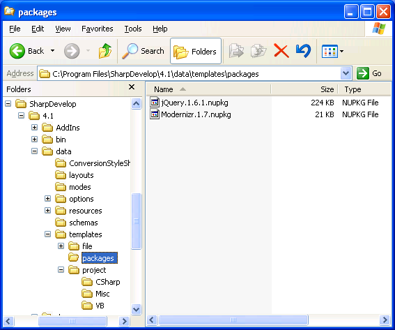

At MIX this year Microsoft released a tools update to ASP.NET MVC 3. One of the new features was a set of ASP.NET MVC project templates that install libraries, such as jQuery and Modernizr, as NuGet packages. SharpDevelop 4.1 now includes this feature. Let us take a look at how to create a project template for SharpDevelop that installs NuGet packages.
As an example we will create a C# project template that installs NUnit as a NuGet package. To keep things simple we will take a copy of an existing C# project template and modify it rather than creating a template from scratch.
SharpDevelop's project templates can be found in the C:\Program Files\SharpDevelop\4.1\data\templates\project directory, assuming the default installation directory was not changed. The C# project templates are stored in the CSharp directory.
Find the Library.xpt file. This file is a class library project template. Make a copy of the Library.xpt file in the same directory and call it UnitTestsProject.xpt. Then open UnitTestsProject.xpt with your favourite text editor.
First change the name of the template so it can be identified when creating a new project. In the TemplateConfiguration section of the template change the Name and the Description as shown below.
<TemplateConfiguration> <Name>Unit Tests</Name> <Category>C#</Category> <Icon>C#.Project.Library</Icon> <Description>Creates a Unit Tests project.</Description> <SupportedTargetFrameworks>v2.0;v3.5Client</SupportedTargetFrameworks> </TemplateConfiguration>
Now we need to get the template to run a command when the project is created. This command will be responsible for installing any NuGet packages defined in the project template. Find the Actions element and add a new RunCommand element as shown below.
<Actions> <Open filename = "MyClass.cs"/> <RunCommand path="/AddIns/PackageManagement/TemplateCommands/InstallPackages"/> </Actions>
Now we can define the NuGet packages that will be installed when the project is created. Find the Files element and inside that add a new File element as shown below.
<File name="packages.config"> <![CDATA[<?xml version="1.0" encoding="utf-8"?> <packages> <package id="NUnit" version="2.5.10.11092" /> </packages> ]]> </File>
This file is the standard NuGet packages.config file. Inside here you can put any NuGet package that you want the template to install. In the example above the NuGet package version has been specified. If you want to install the latest version of a NuGet package then do not include the version attribute, as shown below.
<File name="packages.config"> <![CDATA[<?xml version="1.0" encoding="utf-8"?> <packages> <package id="NUnit" /> </packages> ]]> </File>
Finally save the new project template file. We now have a project template that will install the NUnit NuGet package but we have not defined where the NuGet package needs to be stored. We will look at where the NuGet packages need to be located in the next section.
By default SharpDevelop will look in the data\templates\packages directory for NuGet packages when creating a new project.

So we can add the NUnit NuGet package into this directory. To get the NuGet package you can use the NuGet Package Explorer. From the NuGet Package Explorer's File menu select Open from Feed. In the Select Package dialog search for the NUnit package.
Then double click the NUnit package to open it. Finally from the File menu select Save As and save the package to the data\templates\packages directory.
Adding NuGet packages into the packages directory is all you need to do to be able to use the project template however you do not have to use this directory. You can configure where the project templates will look for packages in SharpDevelop's options. From the Tools menu select Options. In the Options dialog select Template Package Sources from the Package Management category.
In this dialog you can add and remove package sources. You can configure SharpDevelop to use the official NuGet package repository or another directory. If you specify multiple package sources then all of these will be used as a possible source when the project is created.
With the source of the NuGet packages configured all that is left for us to do is use the project template.
Now we can try our new project template. From the File menu select New Solution.
Expand the C# category and select the Unit Tests project template. Give the project a name and location and click the Create button.
The project will then be created and the NUnit NuGet package will be installed too.